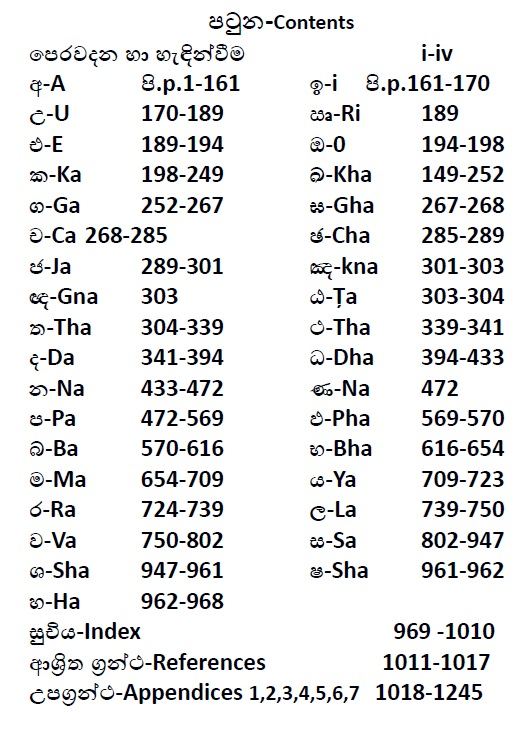

දහම් පද මාලාව
නමෝ තස්ස භගවතෝ අරහතෝ සම්මා
සම්බුද්ධස්ස
භාග්යවත්වූ අර්හත්වූ සම්මා සම්බුදුරජාණන්
වහන්සේට
අපගේ නමස්කාරය වේවා!!!

හැදින්වීම
පසුගිය වසර කිහිපයේදී ත්රිපිටකය හදාරනවිට අපගේ විශේෂ අවධානයට හසුවූ දහම්පද හා ඒවාට අදාළ කරුණු ඇතුලත්කර සටහන් ගොනුවක් සකස්කරන ලදී. දහම් පද මාලාව එම සටහන් එකතු කර පිළියෙළ කළ සංසේකරණයකි. මේ කෘතියේ මූලික පරමාර්ථය, සිංහලෙන් දහම ඉගනගන්නා කෙනෙකුට සූත්රවල සඳහන් විෂය කරුණු පහසුවෙන් සොයාගැනීමට උපකාරිවිමය.
▲ යමහිදී සංහල හා පාලි වචන හා විසේතර එකතුකර ැනීමට මූලිකව භාවිතා කයළේ බුද්ධ ජයන්ති ත්රිපිටක යපාත් යපළය:
දීඝනිකාය: දීඝ.නි.
මජ්ජිමනිකාය:ම.නි.
සංයුත්තනිකාය: සංයු.නි.
අංගුත්තරනිකාය:අංගු.නි.
ඛුද්දකනිකාය: ඛු.නි
විනයපිටකය: වින.පි.
අභිධර්මපිටකය: අභි.ධ.පි.
▼ ඉංග්රීසයයන් ලියවුන මතු සඳහන් කෘතින්, සූත්ර විසේතර පැහැදිලි කර ැනීම පිණිස භාවිතා කරනලදී:
Anguttara Nikaya: EAN
DighaNikaya: EDN
MajjhimaNikaya: EMN
SamyuttaNikāya: ESN
සටහන: පරිහරණය කල ත්රිපිටක යපාත් විසේතර ආශ්රිත ග්රන්ථ යටයත් දක්වා ඇත.
▲ පරිහරණය කළ ශබ්දවකෝෂ:
▼ සංහල ශබ්දවකෝෂය:
▼English Dictionaries:
- B. D: “Buddhist Dictionary”: Manual of Buddhist Terms & Doctrines by Ven.Nyanatiloka
- E.P.D: “English-Pāli Dictionary” by A. P. Buddhadatta Mahathera
- G.B: “The Seeker’s Glossary of Buddhism” by Buddha Dharma Education Association
- P.T.S: “Pāli English Dictionary” by The Pali Text Society
විෂය කරුණු
▲ විෂය කරුණු යකාටසේ කර ඇත්යත් සංහල අකාරාදියට අනුවය:
අ,ඉ,උ,ඍ,එ,ඔ,ක,ඛ,ග,ඝ,ච,ඡ,ජ,ඤ,ඥ, ඨ,ත,ථ,ද,ධ,න,ප,බ,භ,ම,ය,ර,ල,ව,ස,ශ,ෂ,හ
▲ උපග්රන්තථ
විෂය කරුණු සම්බන්ධ අතියර්ක විසේතර උපග්රන්ථ යලසන් ඉදිරිපත්කර ඇත:- උපග්රන්තථය 1: ශ්රාවක භික්ඛු සංඝ
- උපග්රන්තථය 2: ශ්රාවක භික්ුණි සංඝ
- උපග්රන්තථය 3: බුදුන්සරණ ගිය උපාසක උපාසකා
- උපග්රන්තථය 4: බුදුසසුන අත්හල සංඝයා
- උපග්රන්තථය 5: උපමා විසේතර උපග්රන්තථය6: අපයේ ය ෝතම බුදුන් වහන්යසේ පිලිබඳ මුලික විසේතර.
පටුන
The following is an image. We can improve that using text.
පොතේ කොටස්
The following links takes you several pdf files. We can improve that using a series of files containing text.
අනුග්රහය
ශාන්ති-භික්ඛුණි වනආරණ්ය සේනාසනය
නිව් සවුත් වේල්ස් ප්රාන්තය
ඕස්ට්රේලියාව වෙබ්අඩවිය: www.santifm.org Email: santioffice@gmail.comලිපිනය: P.O .Box 132 100 Coalmines Road NSW 2578 Australia
Supported by
Santi - Buddhist Nuns Forest Monastery
P.O .Box 132 100 Coalmines Road NSW 2578 Australia
Download
The full text is avaiable at DhamaPadaMalawa.pdf.
About
To be added.
Contact
To be added